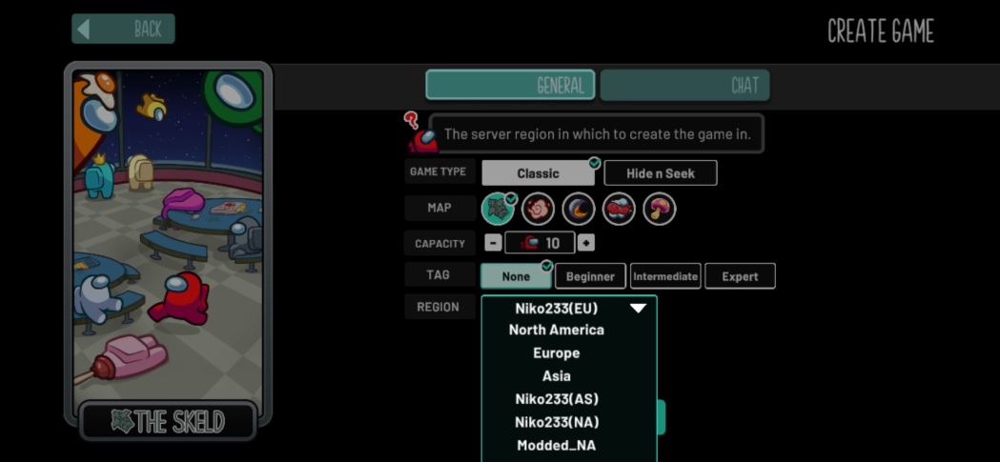

1
Create the tag
Go to
moddedamong.us/tags,
fill out the form, and download the generated .txt file. Make sure you enter
your friend code.
New to modded lobbies or trying to fix something? Find the steps, commands, and answers you need here.

Find an answer or choose a topic below.
No matches found. Try another keyword or .
Learn what modded regions are, when you need one, and the quickest way for mobile and PC players to join.
Keep a short checklist for updating the mod, enabling autostart, queue tools, and handling known lobby issues.
Learn about adding custom tags to your mod if it supports them, then place the finished file in the correct data folder.
Use the black-screen fix, the Niko region notes, and the log tools before assuming the mod is broken.
Common commands for playing, meetings, and hosting. Some are EHR-specific.
Modded Among Us adds new roles, abilities, and ways to win. A lobby might have Crewmates, Impostors, Neutrals, Coven roles, and add-ons.
Some mods also include extra game modes, like free-for-all (FFA).
Every mod handles roles a little differently. A kill does not always mean someone is an Impostor, and voting someone out is not always the right move.
Yes, even Crewmates can sometimes kill.
For a host-only mod, you can usually join through the regular Among Us game. Only the host needs to install it.
Other mods, including Town of Us Mira, may require everyone to install files first. On supported devices, you can use Starlight Launcher on Android or follow the mod’s PC installation guide.
A modded region is a community-run server you can choose instead of an official Among Us region. Hosts sometimes switch regions when modded lobbies are being kicked or blocked by anti-cheat.
Niko regions are often used for host-only mods such as EHR and Project Lotus. Other modded regions may be needed for mods that require an installation on every player’s device.
Check which region the host is using before joining. The lobby code alone is not enough if your region is different.

If you installed a mod, it may already include the regions you need. Otherwise, visit au.niko233.top and follow its instructions for customserver.bat.
Error or domain issue?
BepInEx/plugins.These are the most useful basics for regular players:
/m or /cmd m to read your role and add-on details./r to list active roles, or /r [role] to read one role./id or /cmd id to see player IDs./kc or /cmd kc to see how many killers are still alive./death or /cmd d after death to see death information./w [ids] [message] for meeting whispers when your role allows it.
In meetings, use the /cmd prefix for guessing, whispering, judging, and other hidden role
actions so you do not expose yourself in public chat.
/cmd id to find the player's ID./cmd bt [ID] [RoleName].Most mods show player IDs during meetings. If you cannot see them, run /id before guessing.
For example, to guess player 0 as Dictator, type /cmd bt 0 dictator. Double-check the ID and role first; guessing rules depend on the mod and lobby settings.
Some modded clients also provide a guessing interface during meetings, so you may not need to type a command.
You might be giving away more information than you realize. Players who know the roles can spot clues in how you move, vote, or use abilities.
Chat messages and commands can be clues too. Asking for an ID and immediately trying a meeting ability can make your role easier to figure out.
Read your role with /m and check whether guessing is enabled before using a role-specific ability in public.
Players with similar role colors may be on your team, but always check your role instructions before assuming that.
If someone has an icon beside their name, use /icons to check it. The icon might indicate a relationship, such as a Lawyer or Executioner target.
Do not leave immediately after dying. You can still chat with other ghosts, and some roles have abilities or win conditions that continue after death.
First, check that the lobby is still open and that you copied the code correctly. Then compare your region with the host's. A correct code on the wrong region can still fail.
If you are using a custom region, reopen its link, select the region in Among Us, and try again. Ask the host whether the lobby has already started or closed.
Use the region the host lists with their lobby code. NA, EU, and custom-region labels are not interchangeable, even when the code looks valid.
If the host did not say which region they are using, ask before changing game files or reinstalling anything.
/m in game before asking public role questions. It is one of the easiest ways to avoid getting guessed early.Information taken and/or inspired by @RoHodor's EHR guide.
These are the most common questions for hosts who use mods.
Download the correct DLL for your mod version and replace the older file in Among Us/BepInEx/plugins. Close the game before changing files.
For example, to replace an EHR test build:
BepInEx.plugins.EHR.dll.EHR.dll in./thread rename to rename a lobby thread./thread close to archive and lock a lobby post./code set to set the private code./queue toggle to turn queue on or off./queue next to ping the next players and send the code./queue remove to remove someone without pinging them./code remove then /code set to change the code./blacklist toggle (member) to add someone to the blacklist.More advanced queue settings can be found on mauq.xyz.
If your lobby is repeatedly getting kicked or flagged, these workarounds were suggested for a previously reported issue. They may not fix every server or game version:
Use these tools before guessing at the problem:
How does everyone have pretty names in Among Us? I want one too.
Go to
moddedamong.us/tags,
fill out the form, and download the generated .txt file. Make sure you enter
your friend code.
After downloading the file, send that .txt file to the lobby host.
The host must make sure the filename exactly matches the player friend code, for example
friendcode#1234.txt.
Move the file into the mod user-data folder. For EHR, for example:
EHR-Data > User-data > friendcode#1234.txt.
/addtag and /deletetag, but that is separate from the file-based method above.These are the commands most worth memorizing for basic play, meetings, and hosting. The full command list is much longer. These are general commands, though some are more EHR-specific.
/id show player IDs
/r show active roles
/r [role] show one role description
/h or /help list commands
/template send a saved template
/color [color] change bean color
/tpout leave the ship area
/tpin return to the ship
/l or /lastresult view the last game
/win view the last winners
/cmd m read your role details
/cmd kc see how many killers remain
/cmd bt [id] [role] guess a role
/w [ids] [message] whisper privately
/cmd d see death info after death
/setrole or /setaddon set next-game roles
/combo force or ban role plus add-on combos
/readycheck run an AFK check
/draftstart start role drafting
/addtag add a host-managed tag
These are some of the most commonly asked support questions.
On Steam, open Among Us → Properties → Betas and choose public-previous, if that option is still available and matches the version your mod needs.
If you see a black screen after changing versions, the existing guide suggests removing %userprofile%\AppData\LocalLow\Innersloth\Among Us\settings.amogus. Back up the file first, since this resets local settings.
If you keep a separate modded game folder, copy the downgraded game files into that folder too.
Use au.niko233.top.
Niko233.me now causes immediate kicks because of the domain migration check.
Guest accounts are not supported. An account is required.
Try using Cloudflare WARP for stability.
Check the lobby’s player limit before creating it. For the issue described here, the suggested limit is 15 players or fewer. It can also help to start a local lobby and check the Impostor count.
Requirements: own Among Us on Steam and have some patience.
sudo apt update, sudo apt install pipx, then pipx ensurepath.pipx install protontricks.protontricks 945360 winhttp.WINEDLLOVERRIDES="winhttp=n,b" %command%.The first launch after setup can take 2 to 3 minutes.
These messages can have several causes, but here is what to check first:
Say whether you are on PC, Android, or another device; which mod and game version you are using; and whether you are playing or hosting. Include the region and the exact error message.
If the problem happens when the game starts or a lobby opens, explain when it occurs. A screenshot or log is useful, but remove lobby codes, account details, and anything private before sharing.
Useful links for everything modded related.
Commands, file paths, and regions vary by mod, platform, and version.